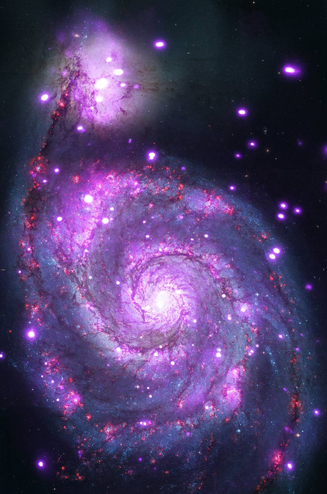
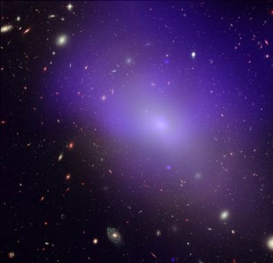
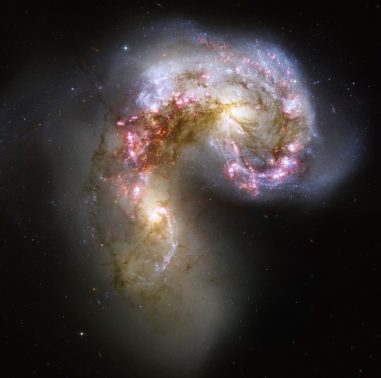
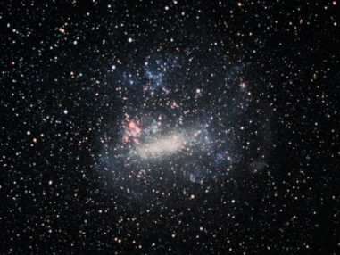

*What is Galaxy and universe?
The term "universe" refers to everything that exists, including galaxies and the space between them. A galaxy is a massive cluster of stars (millions or billions) held together by gravity. The Milky Way is the name of the galaxy in which we live
The universe is all of the galaxies – billions of them! NASA's telescopes allow us to study galaxies beyond our own in exquisite detail, and to explore the most distant reaches of the observable universe.
*How many types of galaxies are in the universe?
Researchers dubbed this the eXtreme Deep Field. All in all, Hubble reveals an estimated 100 billion galaxies in the universe or so, but this number is likely to increase to about 200 billion as telescope technology in space improves.
*What are the 4 types of galaxies?
Scientists have been able to segment galaxies into 4 main types: Spiral, Elliptical, Peculiar, and Irregular.
"Types of galaxies"
1.Spiral

The first type of galaxies-spiral galaxies-can be recognized by their wide, flat disks of rotating gas and dust.
Some spirals have wide flung arms like the above image of M51, while others have spirals that are more tightly bound.
Fun fact: our very own Milky Way is a spiral galaxy, and it is rotating at 168 miles per second. Now that’s fast!
2.Elliptical

Elliptical galaxies are given their name because of their oblong shape and lack of overall structure. Some are nearly spherical, while others are shaped more like a cigar. They can range in size from just a few light years across to being larger than our Milky Way.
Another fun fact: while it is not entirely clear how they form, some scientists propose that elliptical galaxies form as the result of galactic collisions!
3.Peculiar

Speaking of galactic collisions, peculiar galaxies are almost always the result of one!
Galactic collisions aren’t as action packed as you might imagine.
Since galaxies are mostly comprised of empty space, it’s unlikely that any two given stars will collide during the event of a galactic collision.
It is believed that peculiar galaxies compose 5 to 10 percent of all known galaxies. So, it’s safe to say that galactic collisions are a common occurrence in our own universe!
4.Irregular

Irregular galaxies are galaxies that don’t fall under any of the three galaxy types mentioned above. These galaxies tend to be small, dwarf galaxies that lack any distinguishable shape. Many of these galaxies are companions or satellites to larger galaxies.
A final fun fact: The Milky Way has dozens of irregular satellite galaxies.Arguably the most famous one is the Large Magellanic Cloud, shown above.
*How have astronomers estimated the number of galaxies in the universe?
Galaxies are vast collections of stars that populate our universe. But how many galaxies are there?Counting them seems like an impossible task. Sheer numbers is one problem — once the count gets into the billions, it takes a while to do the addition. Another problem is the limitation of our instruments. To get the best view, a telescope needs to have a large aperture (the diameter of the main mirror or lens) and be located above the atmosphere to avoid distortion from Earth's air.
Perhaps the most resonant example of this fact is the Hubble eXtreme Deep Field (XDF), an image made by combining 10 years of photographs from the Hubble Space Telescope. The telescope watched a small patch of sky in repeat visits for a total of 50 days, according to NASA. If you held your thumb at arm's length to cover the moon, the XDF area would be about the size of the head of a pin. By collecting faint light over many hours of observation, the XDF revealed thousands of galaxies,
both nearby and very distant, making it the deepest image of the universe ever taken at that time. So if that single small spot contains thousands, imagine how many more galaxies could be found in other spots.
While estimates among different experts vary, an acceptable range is between 100 billion and 200 billion galaxies, said Mario Livio, an astrophysicist at the Space Telescope Science Institute in Baltimore, Maryland. The James Webb Space Telescope is expected to reveal even more information about early galaxies in the universe, according to The Astrophysical Journal.